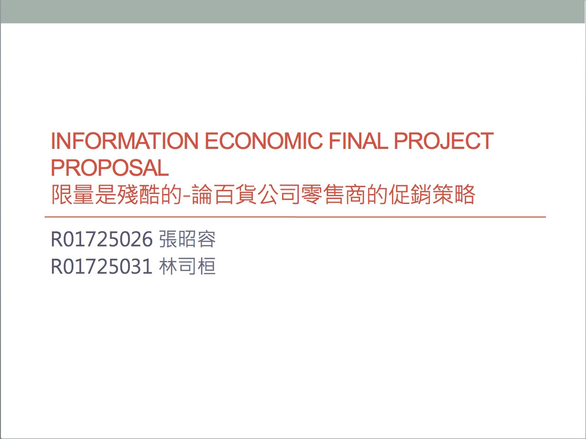
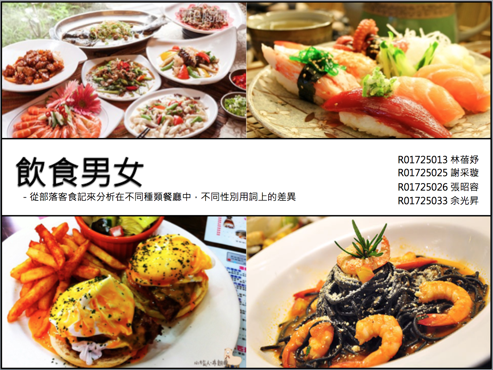
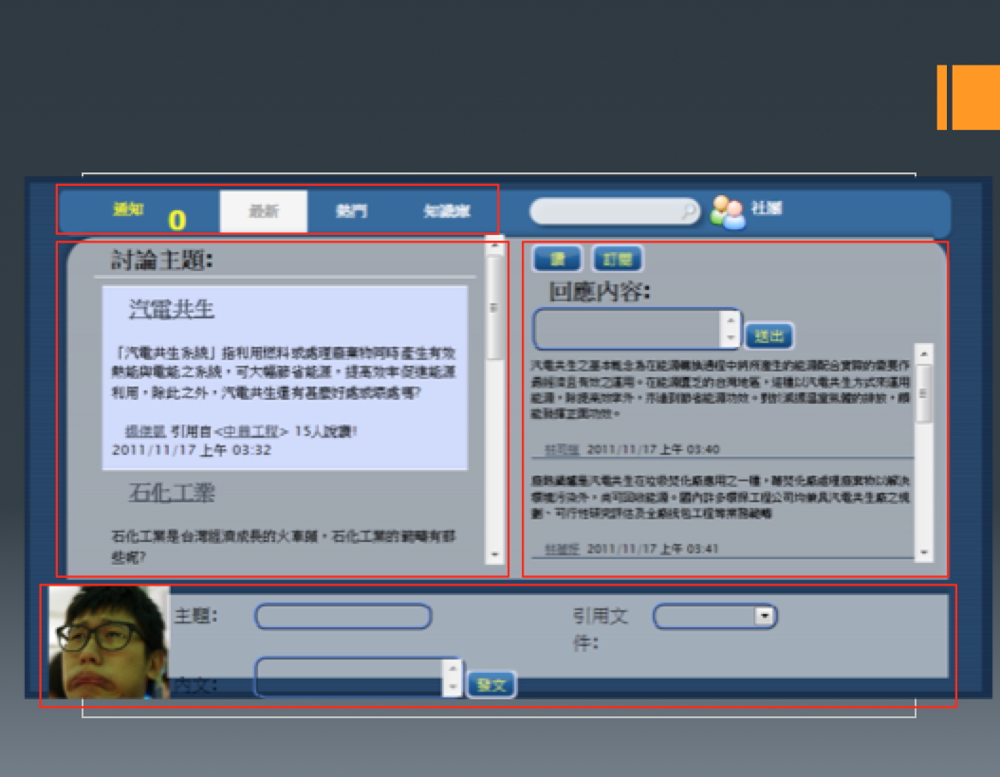
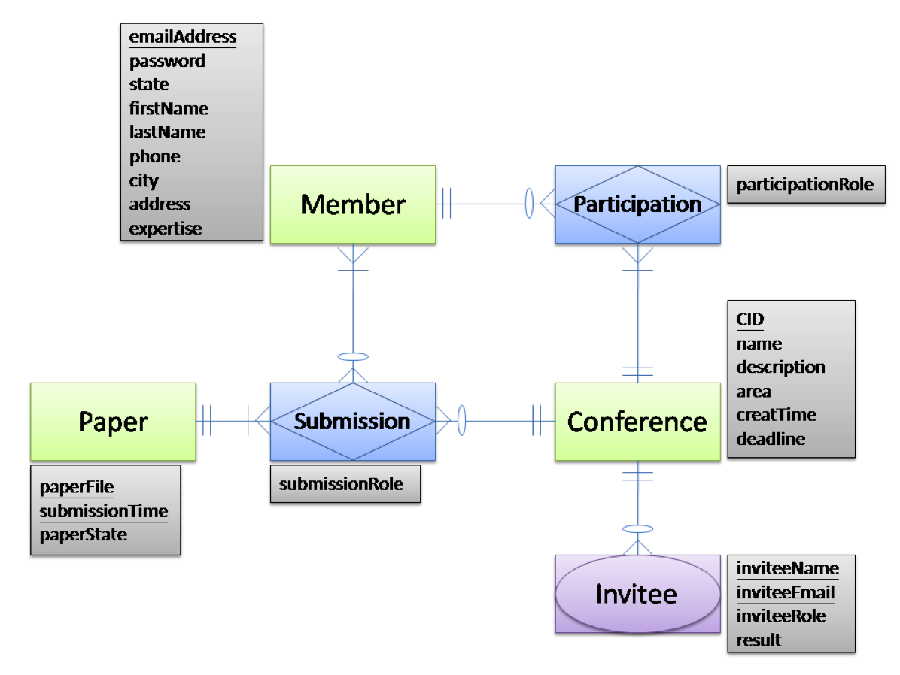

Portfolio
Graduate Thesis
Adivor: Professor Hsu Wei-Yuan My research goal is to propose an integrated model to study user intention of mobile payment adoption.

Information Economy
Advisor: Professor Kung Ling-ChiehBuild a mathematical model to understand how the department store manager make the strategic decision to promote commodity.

Information Retrival and Text Mining
Advisor: Professor Chen Chien-ChinAnalyzing the word choice of food blogger in Taiwan. Find out the difference between male and female blogger.
Information Management
Adivor: Professor Wei Chih-Ping Try to find out what are the factors affecting users to "initiate" following a fan page on Facebook.

Bachelor Degree Project
Advisor: Professor Seng-Cho T. ChouCorporate with Microsoft (Taiwan) and CTCI Corporation to implement an Internal enterprise social network website for knowledge sharing.

Software Development Method
Advisor: Professor Yih-Kuen TSAY Implement a multi-lingual Web-based conference hosting system that facilitates papers submission and selection for typical academic conferences.
Zoo Zoo Paradise
Adivor: Professor Anthony J.T. Lee Designing and implementing a database for an zoo. Providing users the functionalities to query the information they need.
DTV Hero Award
Hold by Institute for Information Industry
There might be huge amount of channels unused in digital TV era. How about renting some of them out to the citizens.